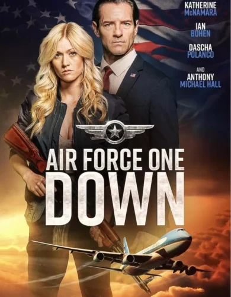
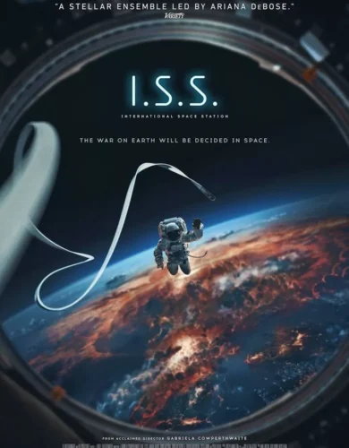

ACTION MOVIES #TOP 10
....#1
THE BEE KEEPER

THE BEE KEEPER.
- TITLE--------THE BEE KEEPER
- GENRE--------ACTION/THRILLER
- LANGUAGE--------ENGLISH
- DURATION--------1hr:46min:32sec
Statham's character is named Adam Clay, an MMA upgrade of Clint Eastwood's The Man with No Name. We don't know anything about Adam except that he lives out in the country raising bees and selling their honey, and that he's played by Statham, which means he's no ordinary beekeeper. His best friend is an older woman named Eloise Parker (Phylicia Rashad), who lives in the farmhouse near his and rents him space in her barn. According to Adam, Eloise is the only person who ever took care of him. Eloise makes the terrible mistake of responding to a phishing scam from a data mining company that empties her bank account as well as the account of a nonprofit she helped found, leading to tragedy. Adam trades his beekeeper uniform for commando gear and disguises, and works his way up the criminal food chain, doing what the law won't.
....#2
LAND OF BAD

LAND OF BAD.
- TITLE--------LAND OF BAD
- GENRE--------ACTION/THRILLER
- LANGUAGE--------ENGLISH
- DURATION-------2hr:10min:17sec
In LAND OF BAD, rookie Air Force TACP officer Sergeant JJ "Playboy" Kinney (Liam Hemsworth) finds himself in the wrong place at the wrong time and gets recruited for a dangerous mission. A Delta Force team that includes Master Sergeant John "Sugar" Sweet (Milo Ventimiglia) and Sergeants Abell (Luke Hemsworth) and Bishop (Ricky Whittle), in addition to Kinney, is asked to parachute in to the Philippines jungle to rescue a captured CIA agent from terrorists. Aiding them from all the way in Las Vegas are drone pilots Captain Eddie "Reaper" Grimm (Russell Crowe) and Sergeant Nia Branson (Chika Ikogwe), providing "eyes in the sky" and missile support. Things go awry, and Kinney finds himself alone, with only Reaper to help him get back home. But it's not going to be easy.
....#3
CAPTAIN MILLER

CAPTAIN MILLER.
- TITLE--------CAPTAIN MILLER
- GENRE--------ACTION
- LANGUAGE--------ENGLISH
- DURATION--------1hr:56min:44sec
“Captain Miller” is a cinematic endeavor that thrusts us back into the pre-independence era, where the echoes of rebellion resound. Directed by Arun Matheshwaran and headlined by the versatile Dhanush, the movie promises a visceral experience, offering a glimpse into a chapter of history marked by resilience and audacity. As we embark on this cinematic journey, let’s delve into the various facets that make “Captain Miller” a compelling tale of freedom and transformation.
....#4
CULT KILLER

CULT KILLER.
- TITLE--------CULT KILLER
- GENRE--------ACTION/THRILLER
- LANGUAGE--------ENGLISH
- DURATION--------1hr:22min:12sec
Directed by Jon Keeyes, Cult Killer is primarily about the relationship between a mentor and his student. When Mikeal Tallini came across Cassie Holt at a bar, she was drunk, but her jujitsu training was impressive. Mikeal was a private investigator; he sympathized with Cassie and offered to help her. Soon, he became her sponsor and inspired Cassie to take control of her addiction. Cassie was a trained librarian, but she had lost her job. After spending countless hours with Mikeal, she took an interest in a private investigation. Mikeal warned her that the job was not as glamorous or exciting as it seemed in books and films. Cassie eventually joined Mikeal’s business, and she was finally her best self in years, but things took a tragic turn soon.
....#5
NO WAY UP

NO WAY UP.
- TITLE--------NO WAY UP
- GENRE--------ACTION
- LANGUAGE--------ENGLISH
- DURATION--------1hr:52min:39sec
No Way Up is an action-packed drama written by Andy Mayson and directed by Claudia Fah. The story revolves around two groups of
travellers on a flight to Cabo. The first group includes Kyle, Jed, Eva, and her bodyguard, Brandon. If you don’t know, Eva is the daughter of the governor of L.A., while Kyle is tired of constantly being in the spotlight when he’s with Eva. This is evident at the airport, where a check-in officer recognizes Eva.
The second group consists of Rosa, along with her grandparents, Hank and Mardy. Both groups board the plane for Cabo, only to find themselves in the center of the dramatic events that will soon take place.
....#6
LIGHTS OUT

LIGHTS OUT.
- TITLE--------LIGHTS OUT
- GENRE--------ACTION/THRILLER
- LANGUAGE--------ENGLISH
- DURATION--------1hr:16min:31sec
In LIGHTS OUT, former soldier Michael "Duffy" Duffield (Frank Grillo) gets off of a bus in Los Angeles and goes into a bar. He joins a card game and starts winning big, prompting the other players to question his honesty, which ultimately leads to a bar fight. Duffy dispatches the others easily, and the altercation is witnessed by Max (Mekhi Phifer). Max offers Duffy a way to make a lot more money: using his skills in an illegal street fighting ring. Since Max owes money to a crime boss named Sage (Dermot Mulroney), this scheme can help them both. Unfortunately, Sage and his partner, crooked cop Ellen Ridgeway (Jaime King), are also in debt and are searching for money that a low-level criminal stole and hid in Max's sister Rachel's (Erica Peeples) house, unbeknownst to her. Coincidentally, Duffy happens to be staying at Rachel's. Once Max and Duffy realize what a fix they've found themselves in, they decide to put an end to it for good.
....#7
AIR FORCE ONE DOWN
AIR FORCE ONE DOWN.
- TITLE--------AIR FORCE ONE DOWN
- GENRE--------ACTION
- LANGUAGE--------ENGLISH
- DURATION--------2hr:05min:55sec
In AIR FORCE ONE DOWN, Allison Miles (Katherine McNamara) trains to become a member of the Secret Service like her uncle, Sam Waitman (Anthony Michael Hall). On her first day on the job, she's asked to fill in for an absent agent on Air Force One. It's an exciting day, until terrorists hijack the plane and, armed with insider knowledge likely provided by a mole, dispatch every single agent on board—except Agent Miles. She manages to get to President Edwards (Ian Bohen) and parachute him off the plane. Unfortunately, they land in enemy territory, right in the hands of General Rodinov (Rade Serbedzija), the terrorist who engineered the evil plot.
....#8
WAR ON TERROR

WAR ON TERROR.
- TITLE--------WAR ON TERROR
- GENRE--------ACTION/THRILLER
- LANGUAGE--------ENGLISH
- DURATION--------1hr:43min:32sec
Just forty-eight hours after two hijacked jet airliners struck the World Trade Center (WTC) on 11 September 2001, the trailer for Sam Raimi’s upcoming Spider-Man (2002) was hurriedly withdrawn from cinemas all across America. The short teaser, shot exclusively for marketing purposes and not consisting of scenes meant for inclusion in the final film, had shown the perpetrators of a smoothly orchestrated bank robbery fleeing in a helicopter through the skies of New York. Their celebrations, however, are abruptly brought to a halt, as somehow they become suspended precariously in mid-air, high above the city streets below. As the camera...
....#9
SAFE HOUSE

SAFE HOUSE.
- TITLE--------SAFE HOUSE
- GENRE--------ACTION
- LANGUAGE--------ENGLISH
- DURATION--------1hr:36min:11sec
A young CIA agent is tasked with looking after a fugitive in a safe house. But when the safe house is attacked, he finds himself on the run with his charge. Matt Weston (Ryan Reynolds) is a CIA rookie who is manning a safe house in Cape Town, South Africa, when Tobin Frost (Denzel Washington) the CIA's most wanted rogue agent is captured and taken to the safe house. During Frost's interrogation, the safe house is overtaken by mercenaries who want Frost. Weston and Frost escape and must stay out of the gunmen's sight until they can get to another safe house. —Douglas Young (the-movie-guy) Tobin Frost is a CIA agent who's believed to have turned rogue, is in Cape Town, South Africa. When he is pursued by men who want to kill him, he goes to the American Consulate where he knows he will be arrested. When the CIA learns of this, it's decided to bring him to a safe house in Cape Town, where they will interrogate him. Shortly after they arrive, the men who chased Frost storm the safe house and kill everyone there. Matt Weston, the agent who's tasked with looking after the safe house, is the only one left, so he takes Frost and they go on the run. While on the run, Frost tells Weston that the only way those men found the safe house was that someone (on the inside) told them about it. Eventually Frost escapes and Weston is told to report to Langley but just as he's about to go there, he recalls something that Frost did that helps him figure out where he could be going. But just as he arrives, the men who are after Frost show up but Weston saves him and they head off. But Weston knows that Frost is holding something back.
....#10
I.S.S
I.S.S.
- TITLE--------I.S.S
- GENRE--------ACTION/SCI-FI
- LANGUAGE--------ENGLISH
- DURATION--------1hr:40min:32sec
a space thriller set on the International Space Station. The film starts strong, exploring trust dynamics among American and Russian astronauts after witnessing a nuclear massacre on Earth. However, it loses its unique appeal in the second half, devolving into a generic thriller with a somewhat disappointing ending. The reviewer credits the cast, particularly mentioning a Game of Thrones actor, but criticizes the movie's cartoonish turn and an unsatisfying conclusion.